El Expediente Romero
La sociedad detrás del silencio
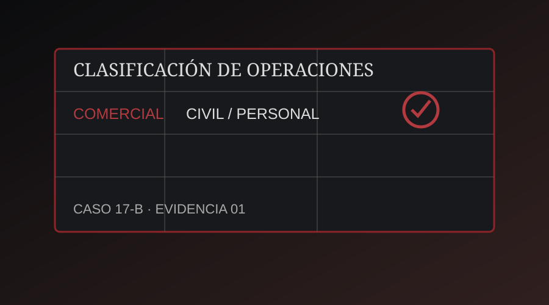
Un profesor universitario ha desaparecido. Antes de desaparecer estaba investigando una serie de operaciones comerciales relacionadas con varias sociedades mercantiles. Encontró documentos que aparentemente conectan a diferentes empresas y personas.
La desaparición
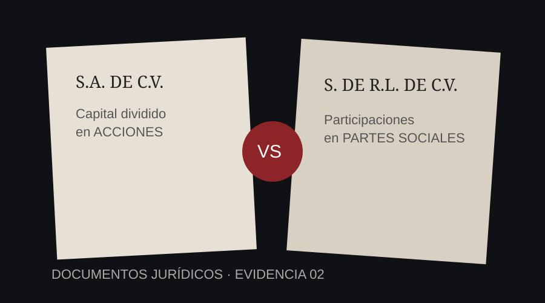
Nota encontrada en la oficina
Son las 8:15 de la mañana.
El Dr. Romero ha desaparecido.
La última persona que lo vio afirma que estaba revisando documentos relacionados con varias empresas aparentemente independientes.
Horas antes de desaparecer, Romero envió un mensaje:
“Descubrí que las empresas no son lo que parecen. Hay una sociedad detrás de todo. Si algo me sucede, busquen los documentos y sigan las pistas.”
La policía encontró su oficina abierta, varios documentos sobre una mesa y un teléfono destruido. No encontraron al Dr. Romero.
Sin embargo, encontraron una carpeta marcada: EXPEDIENTE 17-B.
Dentro había una nota: “No confíen en los nombres. Identifiquen quién realiza los actos de comercio. Descubran qué sociedad está detrás. Encuentren el dinero. Y recuerden: cada documento contiene una parte de la respuesta.”
- Trabajen en equipos de 4 a 6 estudiantes.
- Lean cuidadosamente cada documento.
- No avancen sin resolver el reto.
- Cada reto proporciona una pista.
- Conserven las pistas.
- Al final reconstruirán un mensaje secreto.
- El objetivo es aplicar conocimientos jurídicos, no adivinar.
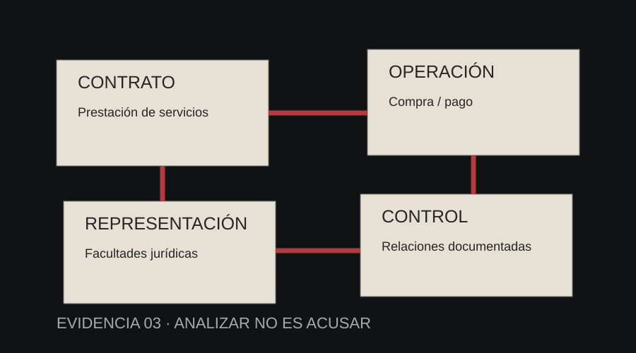
Lo que deberán demostrar
- Identificar actos de comercio.
- Reconocer características básicas de las sociedades mercantiles.
- Diferenciar una Sociedad Anónima de una Sociedad de Responsabilidad Limitada.
- Identificar socios, accionistas, administradores y representantes.
- Analizar relaciones entre sociedades mercantiles.
- Reconocer la importancia de los documentos jurídicos.
- Distinguir entre una operación mercantil y una conducta ilícita.
- Argumentar jurídicamente a partir de documentos y evidencias.
¿Qué está pasando?
Clasifica cada operación como A) Principalmente comercial o B) Principalmente civil o personal.
Pista obtenida: MERCANTIL
“No busquen solamente qué se hizo. Pregunten quién lo hizo.”
Fragmento: LA RESPUESTA COMIENZA DONDE…
¿Quién es quién?
Grupo Mercantil NEXO, S.A. de C.V.
Capital dividido en acciones.
Accionistas: Arturo Salcedo; Inversiones del Centro, S.A. de C.V.; María Torres.
Servicios Integrales NEXO, S. de R.L. de C.V.
Participaciones: Arturo Salcedo; Lucía Vega; Grupo Mercantil NEXO, S.A. de C.V.
Contrato de prestación de servicios.
Grupo Mercantil NEXO contrata a Servicios Integrales NEXO para realizar una supuesta consultoría.
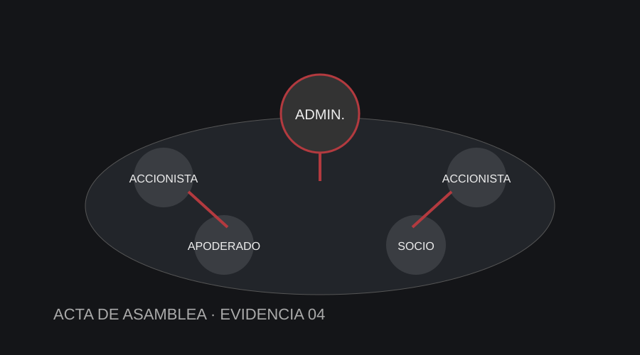
Fragmento: …NADIE…
Una sociedad puede realizar actos jurídicos mediante las personas facultadas para representarla.
La empresa fantasma
NEXO compra 100 computadoras.
Monto: $800,000.
Proveedor: Tecnología del Centro.
NEXO paga $780,000 a Servicios Integrales NEXO.
Concepto: “Asesoría estratégica empresarial.”
Servicios Integrales NEXO paga $770,000 a otra empresa.
Concepto: “Servicios administrativos.”
La última empresa devuelve una cantidad menor mediante una operación bancaria.
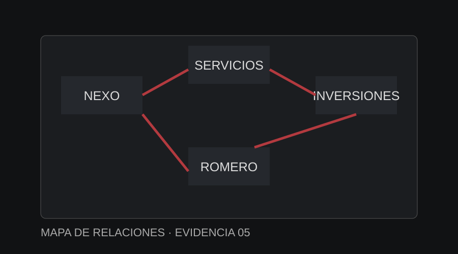
Orden: —
Fragmento: …PUEDE…
El consejo de administración
ACTA DE ASAMBLEA
Arturo Salcedo – Accionista
María Torres – Accionista
Lucía Vega – Administradora
Roberto Díaz – Apoderado
“J” – Persona no identificada
Nota manuscrita: “El que firma no siempre es el que decide.”
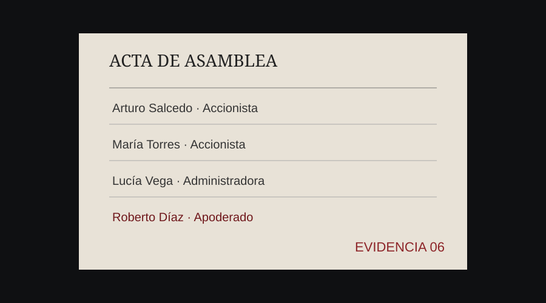
Fragmento: …OCULTAR…
El código de las empresas
NEXO — 14
SERVICIOS — 5
INVERSIONES — 18
CENTRO — 4
ROMERO — 15
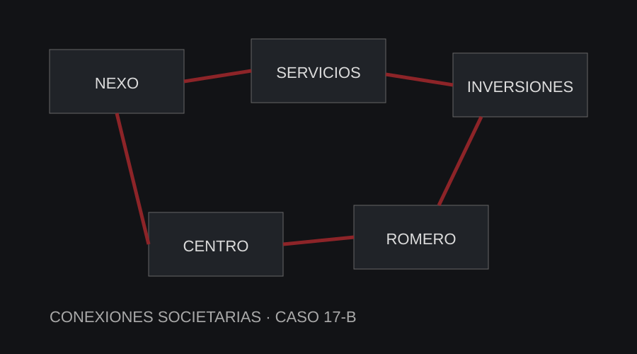
Fragmento: …LA VERDAD…
La última transferencia
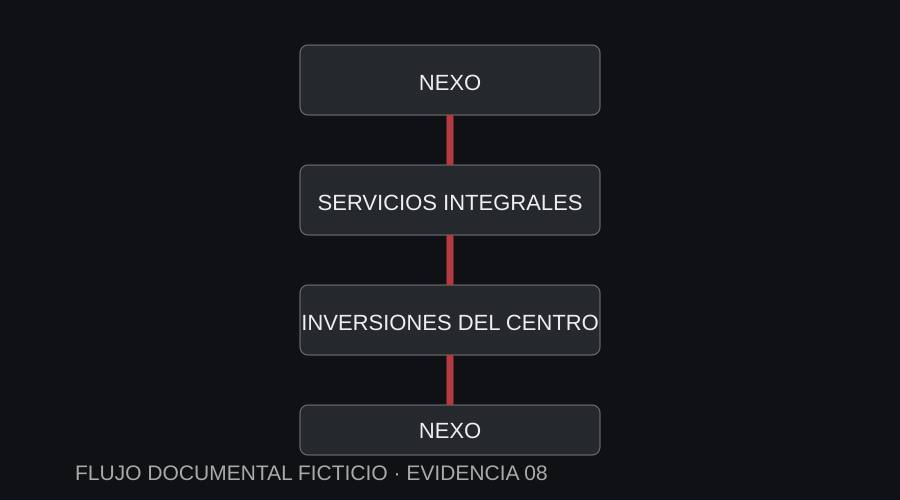
“El dinero regresó al lugar donde comenzó.”
Fragmento: …SE ENCUENTRA…
NO SIGAN SOLAMENTE EL DINERO. SIGAN LA ESTRUCTURA.
Reconstruyan el mensaje
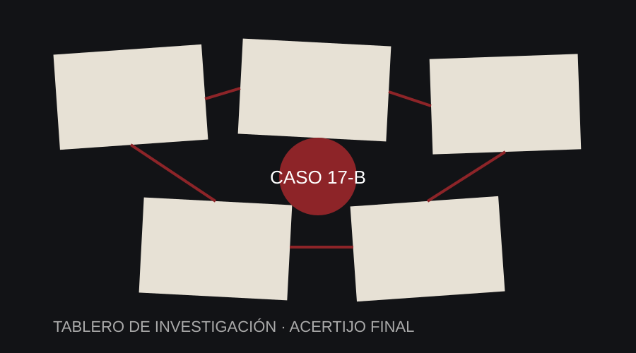
Selecciona las palabras en el orden correcto. El mensaje debe revelar dónde se encuentra la respuesta final.
La investigación ha terminado.
Si llegaron hasta aquí, entendieron algo importante:
En Derecho no basta con seguir el dinero.
Hay que identificar sujetos, actos, relaciones jurídicas, documentos y responsabilidades.
Las empresas utilizadas en la investigación no podían analizarse únicamente por sus nombres. Era necesario estudiar su constitución, sus socios, representantes, administradores y operaciones.
Ahora ya saben dónde está el Dr. Romero.
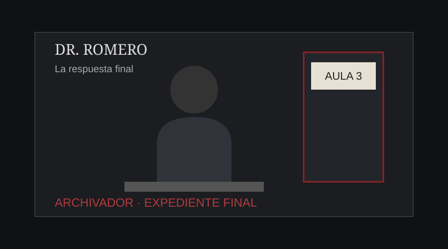
AULA 3
Ahora comienza la parte jurídica
- ¿Qué es un acto de comercio?
- ¿Todos los actos que involucran dinero son actos de comercio?
- ¿Qué características identificaron en las sociedades mercantiles?
- ¿Qué diferencia encontraron entre una S.A. de C.V. y una S. de R.L. de C.V.?
- ¿Qué importancia tiene identificar a los representantes legales?
- ¿Puede una operación mercantil ser legal o ilegal dependiendo de las circunstancias?
- ¿Por qué una transferencia bancaria no demuestra por sí misma la comisión de un delito?
- ¿Qué documentos necesitaría una autoridad para investigar formalmente las operaciones?
- ¿Qué papel tiene la prueba documental en una investigación jurídica?
- ¿Qué aprendieron mediante el escape room que hubiera sido diferente en una clase tradicional?
Hoja de respuestas
GUÍA DEL DOCENTE
Uso: este apartado contiene las respuestas exactas que deben utilizarse para revisar la actividad. En las preguntas de opción múltiple se indica expresamente el inciso correcto. En las preguntas abiertas solo se requieren dos palabras clave; no es necesario escribir una respuesta completa.
EVIDENCIA 01 — ¿QUÉ ESTÁ PASANDO?
Instrucción: clasificar cada operación como A) Principalmente comercial o B) Principalmente civil o personal.
- Una persona compra una computadora para utilizarla en su casa.
Respuesta correcta: B) Principalmente civil o personal.
Justificación: la adquisición se realiza para uso personal y no para una actividad de comercio. - Una empresa compra 500 computadoras para venderlas posteriormente.
Respuesta correcta: A) Principalmente comercial.
Justificación: la mercancía se adquiere con finalidad de reventa dentro de una actividad empresarial. - Una persona vende su automóvil particular.
Respuesta correcta: B) Principalmente civil o personal.
Justificación: se trata de la venta de un bien de uso personal, sin que los datos indiquen una actividad empresarial de compraventa. - Una empresa compra mercancía para revenderla.
Respuesta correcta: A) Principalmente comercial.
Justificación: existe una finalidad directa de comercialización o reventa. - Una persona contrata internet para uso personal.
Respuesta correcta: B) Principalmente civil o personal.
Justificación: el servicio se destina al uso personal. - Una empresa adquiere mercancía para comercializarla.
Respuesta correcta: A) Principalmente comercial.
Justificación: la adquisición forma parte de una actividad empresarial de comercialización. - Una persona presta dinero ocasionalmente a un familiar.
Respuesta correcta: B) Principalmente civil o personal.
Justificación: los datos del ejercicio muestran un préstamo ocasional de carácter familiar y no una actividad empresarial. - Una empresa realiza operaciones financieras dentro de su actividad empresarial.
Respuesta correcta: A) Principalmente comercial.
Justificación: la operación se realiza dentro de una actividad empresarial.
Pregunta abierta: “¿Qué característica permite distinguir una operación comercial de una operación realizada para uso personal?”
Palabras clave obligatorias: FINALIDAD + COMERCIAL. El estudiante solo necesita escribir esas dos palabras (en cualquier orden y con mayúsculas o minúsculas indistintas).
Clave desbloqueada: MERCANTIL.
Fragmento: LA RESPUESTA COMIENZA DONDE…
EVIDENCIA 02 — ¿QUIÉN ES QUIÉN?
- ¿Qué tipo de sociedad aparece en el Documento A?
Respuesta correcta: S.A. de C.V. - ¿Qué tipo de sociedad aparece en el Documento B?
Respuesta correcta: S. de R.L. de C.V. - ¿Qué diferencia básica existe?
Palabras clave obligatorias: ACCIONES + PARTES SOCIALES. - ¿Por qué importa conocer quiénes participan?
Palabras clave obligatorias: ACCIONISTAS + REPRESENTACIÓN.
Clave desbloqueada: SOCIEDAD.
Fragmento: …NADIE…
EVIDENCIA 03 — LA EMPRESA FANTASMA
Pregunta: “¿Cuál es la diferencia entre una operación mercantil y una operación ilícita?”
Palabras clave obligatorias: MERCANTIL + ILÍCITA. El estudiante solo necesita escribir esas dos palabras.
Pregunta: “Ordena las cuatro ideas de la investigación.”
Orden correcto:
- CONTRATO
- OPERACIÓN
- REPRESENTACIÓN
- CONTROL
Clave desbloqueada: PUEDE.
Fragmento: …PUEDE…
EVIDENCIA 04 — EL CONSEJO DE ADMINISTRACIÓN
Datos del acta: Arturo Salcedo — Accionista; María Torres — Accionista; Lucía Vega — Administradora; Roberto Díaz — Apoderado; “J” — Persona no identificada.
- ¿Qué función cumple un representante legal?
Palabras clave obligatorias: ACTUAR + REPRESENTACIÓN. - ¿Por qué importa determinar quién tiene facultades de representación?
Palabras clave obligatorias: FACULTADES + REPRESENTACIÓN. - Selecciona la figura que puede actuar en nombre de la sociedad conforme a sus facultades.
Respuesta correcta: A) Representante facultado.
Clave desbloqueada: OCULTAR.
Fragmento: …OCULTAR…
EVIDENCIA 05 — EL CÓDIGO DE LAS EMPRESAS
Pregunta: “¿Qué elemento debería investigarse para determinar si existe una relación entre estas sociedades?”
Respuesta correcta: B) Sus accionistas, socios, administradores, representantes y operaciones.
Inciso correcto: B) Sus accionistas, socios, administradores, representantes y operaciones.
Las otras opciones —el color de los logotipos, el tamaño de las oficinas y el número de empleados— no permiten por sí mismas determinar una relación jurídica entre sociedades.
Clave desbloqueada: LA VERDAD.
Fragmento: …LA VERDAD…
EVIDENCIA 06 — LA ÚLTIMA TRANSFERENCIA
- ¿Es suficiente observar transferencias para determinar que se cometió un delito?
Respuesta correcta: B) No; se requiere contexto, documentos y elementos de prueba adicionales. - ¿Qué persona aparece relacionada con las tres sociedades en los documentos del caso?
Respuesta correcta: A) Arturo Salcedo.
Clave desbloqueada: SE ENCUENTRA.
Fragmento: …SE ENCUENTRA…
ACERTIJO FINAL — RECONSTRUYAN EL MENSAJE
Orden correcto de las palabras:
- DONDE
- NADIE
- PUEDE
- OCULTAR
- LA VERDAD
- SE ENCUENTRA
- ARCHIVADOR
Mensaje completo: DONDE NADIE PUEDE OCULTAR LA VERDAD SE ENCUENTRA ARCHIVADOR.
Respuesta final: ARCHIVADOR.
Ubicación narrativa: AULA 3.
CRITERIO PARA PREGUNTAS ABIERTAS
Para desbloquear una evidencia, el estudiante no necesita redactar una explicación. Debe escribir únicamente las dos palabras clave indicadas en cada pregunta abierta. Se aceptan mayúsculas o minúsculas y el orden de las dos palabras puede variar.
Nota docente: en las respuestas abiertas pueden aceptarse formulaciones diferentes siempre que mantengan el mismo contenido jurídico esencial.
Han finalizado el ejercicio
Felicidades. El equipo ha completado la investigación jurídica.
MENSAJE FINAL DEL DOCENTE
Gracias por su esfuerzo, análisis y trabajo en equipo.
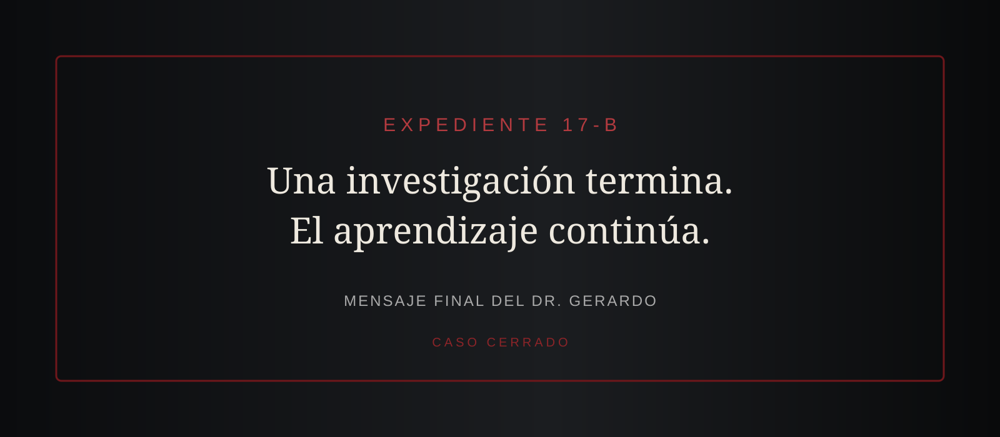
Antes de abandonar esta pantalla, deben presentar personalmente la siguiente clave secreta al docente.
Instrucción: no escriban la clave en el chat ni la compartan con otros equipos. Muéstrenla al docente para acreditar que concluyeron el escape room.
El docente verificará la clave y posteriormente podrá solicitar la reflexión jurídica.